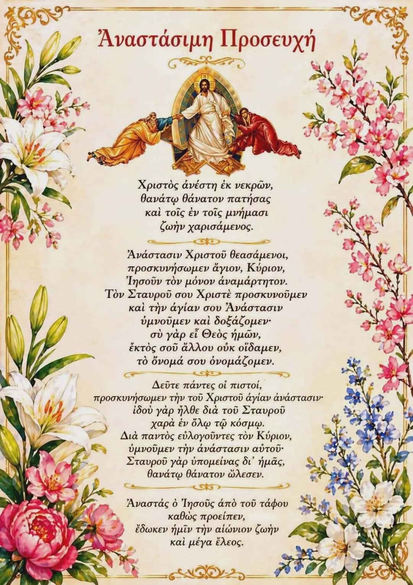

Χριστός Ανέστη!

«Χριστός ἀνέστη ἐκ νεκρῶν, θανάτῳ θάνατον πατήσας, καὶ τοῖς ἐν τοῖς μνήμασι ζωὴν χαρισάμενος.» Με αυτόν τον αναστάσιμο ύμνο η Ορθόδοξη Εκκλησία διακηρύσσει αδιάκοπα, εδώ και δύο χιλιάδες χρόνια, το κεντρικότερο γεγονός της πίστεώς μας: την Ανάσταση του Κυρίου ημών Ιησού Χριστού.
Η Ανάσταση δεν είναι απλώς μία ανάμνηση ενός ιστορικού γεγονότος ούτε ένας συμβολισμός της άνοιξης και της αναγέννησης της φύσης. Είναι το θεμέλιο της χριστιανικής πίστεως, η νίκη του Θεανθρώπου επί του θανάτου, η αυγή της νέας κτίσεως. «Εἰ δὲ Χριστὸς οὐκ ἐγήγερται, ματαία ἡ πίστις ἡμῶν», γράφει ο Απόστολος Παύλος προς τους Κορινθίους.
Το πρωί της μιας των Σαββάτων, οι Μυροφόρες γυναίκες ήλθαν στο μνημείο φέρουσαι αρώματα, αναζητώντας τον Διδάσκαλο μεταξύ των νεκρών. Όμως ο λίθος ήταν αποκεκυλισμένος, ο τάφος κενός, και ο Άγγελος Κυρίου τους ανήγγειλε: «Οὐκ ἔστιν ὧδε, ἠγέρθη γὰρ καθὼς εἶπε.» Έτσι έγιναν οι πρώτες κήρυκες της Αναστάσεως, οι «ἰσαπόστολοι» μάρτυρες της κενώσεως του Άδου.
Με την Ανάστασή Του ο Χριστός κατήργησε το κράτος του θανάτου και άνοιξε τις πύλες του Παραδείσου σε όλο το ανθρώπινο γένος. Κατέβηκε στον Άδη ως νικητής και ανέστησε μαζί Του τον Αδάμ και την Εύα, όλους τους από αιώνος κεκοιμημένους δικαίους. Δεν πρόκειται για μία ατομική ανάσταση, αλλά για την ανάσταση όλης της ανθρωπίνης φύσεως την οποία προσέλαβε ο Κύριος.
Η νύχτα της Αναστάσεως είναι «ἡ νὺξ ἡ σωτήριος καὶ φωταυγής», όπως ψάλλει η Εκκλησία. Από τη μία και μοναδική λαμπάδα του Αγίου Φωτός που εξέρχεται από το Πανάγιο Τάφο στα Ιεροσόλυμα, ανάβουν οι λαμπάδες των πιστών σε όλον τον κόσμο. Είναι το άκτιστο φως της Θεότητος, που λάμπει στα σκοτάδια του βίου και διαλύει το σκότος του θανάτου και της αμαρτίας.
Όταν ο ιερέας εξέρχεται από το Άγιο Βήμα κρατώντας τη λαμπάδα και ψάλλει το «Δεῦτε λάβετε φῶς ἐκ τοῦ ἀνεσπέρου φωτός», η καρδιά κάθε ορθοδόξου πληρούται από ανείπωτη χαρά. Ο πασχαλινός ασπασμός «Χριστός Ανέστη – Αληθώς Ανέστη» ενώνει συγγενείς, φίλους και αγνώστους σε μία ενιαία κοινότητα της αναστασίμου ευφροσύνης.
Ο Άγιος Ιωάννης ο Χρυσόστομος, στον περίφημο Κατηχητικό του Λόγο που αναγινώσκεται κάθε χρόνο τη νύχτα του Πάσχα, προσκαλεί τους πάντες στη χαρά: «Εἴ τις εὐσεβὴς καὶ φιλόθεος, ἀπολαυέτω τῆς καλῆς ταύτης πανηγύρεως... Πλούσιοι καὶ πένητες μετ' ἀλλήλων χορεύσατε· ἐγκρατεῖς καὶ ῥᾴθυμοι τὴν ἡμέραν τιμήσατε.»
Η Ανάσταση είναι η εγγύηση και της δικής μας αναστάσεως. «Ὁ πιστεύων εἰς ἐμέ, κἂν ἀποθάνῃ ζήσεται», υπεσχέθη ο Κύριος. Ο θάνατος για τον χριστιανό δεν είναι πλέον τέλος, αλλά «κοίμησις», πέρασμα προς την αιώνια ζωή, προς τη συνάντηση με τον Αναστάντα Νυμφίο της ψυχής μας.
Ας υψώσουμε λοιπόν τις καρδιές μας με ευγνωμοσύνη και ας ψάλλουμε μαζί με ολόκληρη την Εκκλησία: «Αναστάσεως ημέρα, λαμπρυνθώμεν λαοί· Πάσχα Κυρίου, Πάσχα· ἐκ γὰρ θανάτου πρὸς ζωήν, καὶ ἐκ γῆς πρὸς οὐρανὸν Χριστὸς ὁ Θεὸς ἡμᾶς διεβίβασε, ἐπινίκιον ᾄδοντας.»
Χριστός Ανέστη! Αληθώς Ανέστη ο Κύριος!